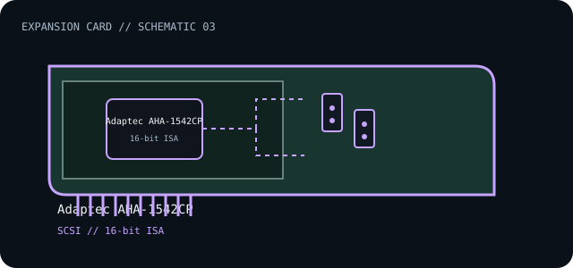

[ INDIVIDUAL COMPONENT // EXPANSION CARDS ]
Adaptec AHA-1542CP
Legacy 16-bit ISA SCSI host adapter with onboard floppy-disk-controller function. This is a model-specific catalog entry; confirm the exact label and revision before use.

IDENTIFICATION: Match the full model/part number and board revision to the label. Port and bus information below is included only where the linked manufacturer or standards documentation supports it; revisions and platform support may differ.
Specifications and service checks
| Catalog subcategory | Storage and disk controllers |
|---|---|
| Exact model / part identifier | AHA-1542CP |
| Bus / host interface | 16-bit ISA |
| Verified interfaces / protocols | SCSI-2 host adapter; the manufacturer guide documents SCSI device connections and adapter configuration. |
| OS / driver / firmware caveat | Legacy option-ROM and driver environment: follow the AHA-154xCP guide for BIOS and OS support. Current operating systems and UEFI-only hosts generally lack a supported driver/ISA path. |
| Service note | Before removing a cell or clearing settings, document jumper/DIP settings and adapter BIOS configuration. Verify SCSI ID and termination at both ends; preserve the original manual revision and board silkscreen. |
Installation and archival notes
- Record the board model, revision, serial/date code, firmware, bracket, accessories, and the documentation revision used to identify the unit.
- Confirm the host slot's electrical wiring/keying, required power, supported OS/driver, and any platform or option-ROM restriction in the cited model documentation.
- Use ESD precautions. Do not infer pinout, compatibility, protocol, boot support, or revision equivalence from a similar connector or product-family name.
Before removing a cell or clearing settings, document jumper/DIP settings and adapter BIOS configuration. Verify SCSI ID and termination at both ends; preserve the original manual revision and board silkscreen.
Model-specific sources
- Microchip/Adaptec — AHA-1542CP product support archiveExact AHA-1542CP support record and legacy downloads.
- Microchip/Adaptec — AHA-154xCP User Guide (PDF)ISA installation, SCSI connection, configuration, BIOS and service details.
Source links are selected for this exact model or its manufacturer-documented family. Review the source revision and your card's printed identifiers before service.